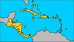

De: La Frikipedia, la enciclopedia extremadamente seria.
De: La Frikipedia, la enciclopedia extremadamente seria. De: La Frikipedia, la enciclopedia extremadamente seria.
| De la serie Países del planeta tierra: | |||||
| Terra de ingla | |||||
|---|---|---|---|---|---|
| |||||
| Lema: Fuck The Queen! | |||||
| Himno: God save the antimonarchists
| |||||
| 
| |||||
| Capital | Lourdes | ||||
| Mayor ciudad | Téchesten | ||||
| Lenguas oficiales | Inglés, Suahili | ||||
| Gobierno | Piratería parlamentaria | ||||
| Yor Royal Hayness | | ||||
| Área | Su propia área | ||||
| Población | Unos 14k flemáticos bebedores de te | ||||
| Moneda | Teína Concentrada en pastillas de 3 gramos | ||||
| Zona horaria | GTM propio | ||||
| Dominio Internet | .wdt (We Drink Tea / Nosotros Bebemos Té) | ||||
| Código telefónico | 0044
| ||||
| Ellos son el mundo. El resto solo somos sus lugares de veraneo | |||||
«Oh, se me hace tarde para la hora del té. Nos vemos, Sir Reginald»
~ Un ingles cualquiera mientras tiene prisa
«Dios Salve a la Reina»
~ Freddie Mercury mientras canta en Sachen Rachen
«Iron Maiden, ¡Pesado!»
~ Bill y Ted antes de su fallida ejecución en la Inglaterra de Enrique el Octavo
«¡No! ¡Estas son Mías!»
~ Mr. Bean con su novia en el cine de Londres antes de ver una peli porno de terror
El Reino Hundido de Gran Bretaña e Islandia del Norte es un país ¿europeo? rodeado de agua (porque nadie en el resto de Europa soporta a sus habitantes).
Su moneda es la libra, lo que da una idea de lo poco trabajadores que son.
Actualmente se caracteriza por tener en la selección inglesa un seleccionador italiano (y querrán ganar contra Italia).
Todo comenzó cuando un anglo quiso jugar a ser híbridos.
Pero no, nació un muchachito muy robusto, sano, y cafre. Tenía los genes anglos y sajones, siendo el primer anglosajón del mundo. Aparte, dado que ambos pueblos eran de origen vikingo y que por aquella época proliferaba el cristianismo, tuvo una época en la que se creyó una reencarnación de Jesús.
Estos factores hizo que el niño se dedicara desde que tuvo su primera erección en violar a mujeres, saquear y quemar aldeas. y todo ello sin pecar, pues era el Hijo de Dios;generando muchos hijos (también bastante gamberros) e hijos, y la especie perduró, por lo que el plan de su padre no solo lo había cumplido, sino que se le había ido de las manos.
Siguieron visitando y visitando pueblos, viajando siempre hacia al Norte (probablemente debido al diseño de sus barcos). Pero un buen día, intentaron invadir a Stotch-BriteLandia, estando regentada por Bretaña, donde escaparon al ver sus viejecitas con tocados de encaje vikingo,pararon en Galicia, pero al ser violdaos repetidamente en Tui(ciudad donde se llevaba la ejecución de "Muerte por quiqui") seguieron viajando más al Sur,pasando de largo ante África)de este modo, se toparon con el Inframundo.
Pero, mala suerte del destino, también existía otro monstruo allí. En este caso, era la antorcha humana o Juana de Arco (tataratataraetcéteraabuela de la actual antorcha humana de los 4 allá que los escoceses y, ya que estaban en guerra con los ingleses, pues podían aprovechar para invadirles. Estuvieron unos cuantos siglos en la isla que sirvieron para amanerar sus costumbres (empezaron a beber té y a hablar con educación mientras exterminaban al enemigo).
Cuando consiguieron liberar al país del napster, para poder descargarse el oro español. España fundó la Armada Invencible para defenderse, pero el canon que pagaban por cada barco que construían (como curiosidad, los ingleses, que eran los que pirateaban, no conocían ni pagaban canon alguno), hizo que el recortado presupuesto solo llegara para mano de obra barata y materiales comprados en mercadillo.
Continuará...
El trozo de tierra en mitad del mar que forma Gran Bretaña, posee en su superficie una gran gama de seres que son conocidos como los hijos de la Gran Puta? Bretaña, de entre los cuales destacan los ingleses, los escoceses y los irlandeses.
Los ingleses autoctonos se caracterizan por tener una piel muy blanca, debido principalmente a que les cae agua durante todo el día. Se alimentan basicamente de sandwiches de pepinillo y cerveza, a las que llaman por el ridículo nombre de Beer, servidas en un aun mas ridícula medida que se llama pinta, y visten con camisetas de equipos del manchado united o del liverfuck, y con calcetines de lanas con rombos que les tapan de rodillas para abajo. Los escoceses son como ingleses, pero con media cara azul, y el pelo naranja y entrenzado. Aun se desconoce porque les crece el pelo con forma de trenzas. Se alimentan de la misma forma que los ingleses, pero cambian la cerveza por el whisky escocés, hecho a base de rábanos y zanahorias, que posteriormente se mezclan en un barril pisándolas con los pies. Es además la principal fuente de la economía escocesa, pues se envían a todos los sitios del mundo para fomentar el botellón. Encubren su piernas con faldas hechas con los restos de manteles de cuadros, y el torso con gaitas.
Los irlandeses no se sabe bien como son, pues es el pueblo minoritario, y se cree que viven en las praderas, en las cuevas, en los pubs irlandeses y en el Pedrón de Gibraltar, aunque hay quienes dicen haberlos vistos y reconocerlos como diminutos ingleses.
Recientemente se han propuesto unos diseños para mejorar la actual bandera de forma que integre simbología satánica gálica. Uno de los diseños propuestos ha sido plagiado vilmente del anime Tengen Toppa Gurren-Lagann creado a partir de la mente de un anónimo señor noruego, que representa el logo de la Brigada Gurren la calavera de un dragón rojo con gafas de sol.
  Imperios de Europa Imperios de Europa
|
|---|
| Eslovaquia |
Autor(es):